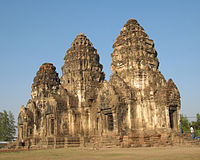
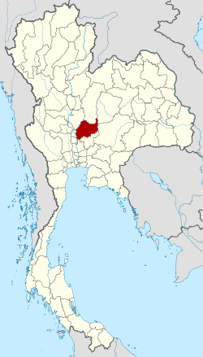
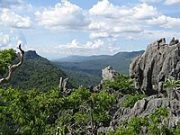
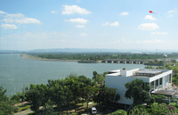

วีดีโอแนะนำประวัติลพบุรี
วีดีโอแนะนำประวัติลพบุรี |   | คำว่า "ละโว้" นี้น่าสัณนิษฐานได้ว่ามาจากคำว่า ลวะ นั่นเอง (ลวบุรี กลายมาเป็น ลพบุรี ในทุกวันนี้) ซึ่งคำว่า ลวะ ในภาษาสันสกฤตแปลว่า น้ำ (ซึ่งอาจหมายความถึงว่าเมืองนี้มีน้ำมาก) เมื่อนำเอามาสมาสกับคำว่า อุทัย (ลว + อุทัย) ก็กลายเป็นลโวทัย (ดังเช่น สุข + อุทัย กลายเป็น สุโขทัย) ซึ่งคำจารึก "ลโวทัยปุระ" ยังพบปรากฏบนเหรียญเงินโบราณที่ขุดค้นได้ที่บริเวณจังหวัดลพบุรีอีกด้วย แต่บ้างก็ว่าคำว่า ละโว้ มาจากภาษามอญซึ่งแปลว่าภูเขา คงเนื่องเพราะเมืองนี้มีลักษณะภูมิประเทศเป็นภูเขา |
|   | จังหวัดลพบุรีเคยปกคลุมด้วยป่าไม้ที่มีค่าทางเศรษฐกิจค่อนข้างสมบูรณ์ เป็นป่าดิบแล้งผืนใหญ่ในบริเวณลุ่มแม่น้ำป่าสัก ป่าเบญจพรรณ และป่าแดง หรือป่าเต็งรังในเขตเชิงเขา ทรัพยากรป่าไม้ในจังหวัดลพบุรีนับว่ามีสภาพเสื่อมโทรม และปริมาณน้อยเมื่อเทียบกับพื้นที่ของจังหวัด มีการสำรวจทรัพยากรป่าไม้โดยใช้ข้อมูลภาพถ่ายจากดาวเทียมปี พ.ศ. 2525 พบว่าสภาพป่าไม้มีเนื้อที่ร้อยละ 4.69 ของเนื้อที่จังหวัด ต่างกับภาพถ่ายเมื่อปี พ.ศ. 2504 ซึ่งมีเนื้อที่ป่าร้อยละ 33.95 จะเห็นว่าในช่วงเวลา 21 ปีที่ผ่านมา พื้นที่ป่าไม้ลดลงร้อยละ 29.26 และมีสภาพเป็นป่าที่ถูกทำลายใน 2528 จังหวัดลพบุรีมีเนื้อที่ป่าไม้ 174,375 ไร่ หรือประมาณร้อยละ 4.50 ของเนื้อที่จังหวัด และในปี 2540 มีการสำรวจพบว่าพื้นที่ป่าได้ถูกบุกรุกทำลายไป จนเหลือป่าที่สมบูรณ์เพียง 123,125 ไร่ หรือประมาณร้อยละ 3.18 ของพื้นที่จังหวัดจากการที่ป่าไม้ในจังหวัดมีสภาพลดลง กรมป่าไม้จึงได้อนุรักษ์ป่าที่ยังมีสภาพสมบูรณ์ไว้ ปัจจุบันมีป่าสงวนแห่งชาติอยู่ในพื้นที่จังหวัดลพบุรี 4 แห่ง รวมเนื้อที่ 1,110,108.25 ไร่ (1,776.17 ตารางกิโลเมตร) ซึ่งพื้นที่ส่วนใหญ่เป็นภูเขาสลับซับซ้อน ได้แก่ ป่าซับลังกา ป่าวังเพลิง ป่าชัยบาดาล และป่าเขาเพนียด |
วีดีโอแนะนำประวัติลพบุรี วีดีโอแนะนำสถานที่ท่องเที่ยวในจังหวัดลพบุรี